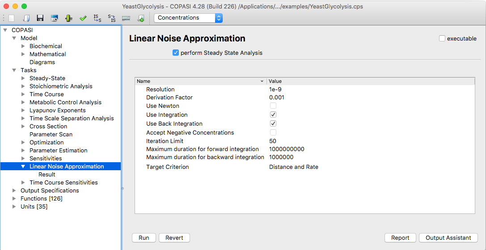

<div class="row">
  <div class="col-xs-12">
   <p>The linear noise approximation is a method for estimating covariances between species particle numbers.</p>

   <p></p>

    <h3>References</h3>
    <p>[1] Pahle, Jürgen, Joseph D. Challenger, Pedro Mendes, and Alan J. McKane. “Biochemical Fluctuations, Optimisation and the Linear Noise Approximation.” BMC Systems Biology 6, no. 1 (July 17, 2012): 86. <a href="https://doi.org/10.1186/1752-0509-6-86" target="_blank">https://doi.org/10.1186/1752-0509-6-86</a>.
    </p>
  </div>
</div>
